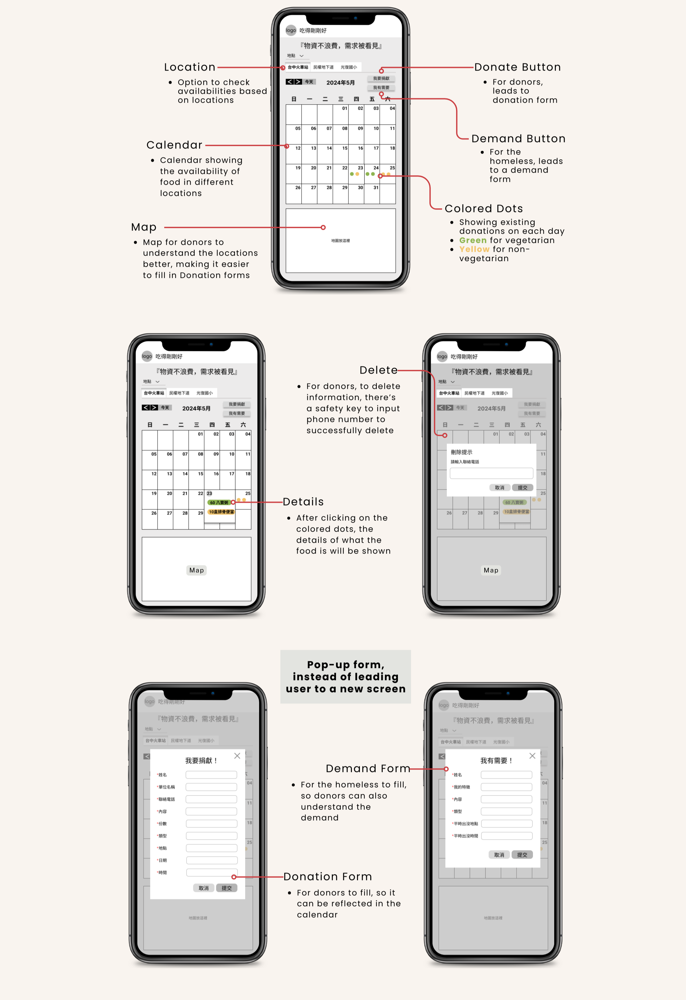
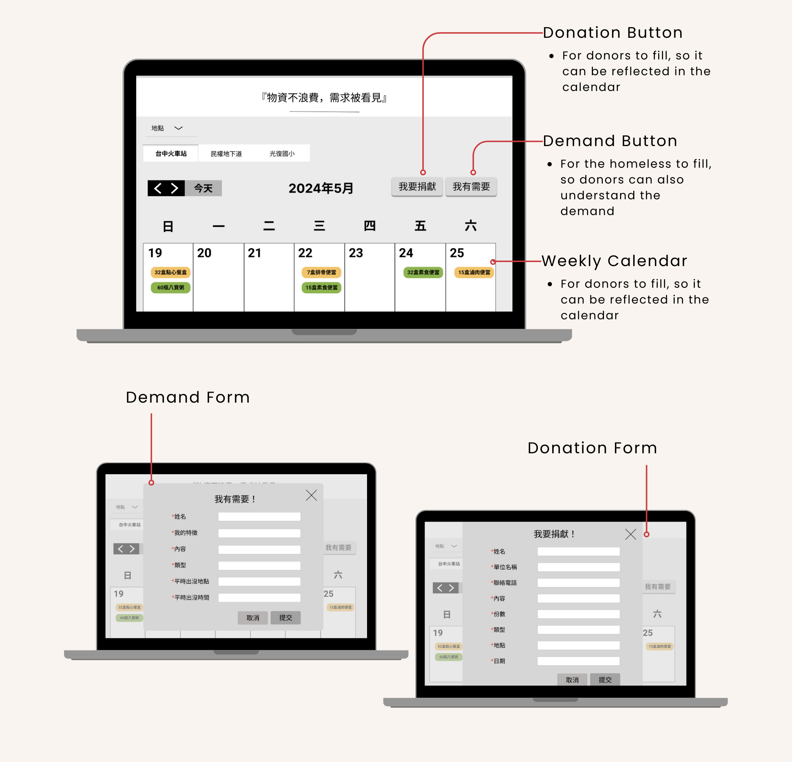

“Eat Together” Website Design
The website is designed to bridge the gap between homeless individuals in need of food and generous donors who want to contribute in Taichung City, Taiwan. It aims to fulfill the basic needs of the homeless people and eliminating potential food waste of repetitive resources from different donors on the same day & time. The solution is web-based considering the limitations our target users may face.
Timeline: (Ongoing)
Tools:
Miro│Figma
Role:
UX Designer
Problem
Food insecurity among homeless is a critical issue in Taiwan. Despite the existence of various food donation programs and donors, a significant amount of food goes to waste due to lack of coordination and visibility. Homeless individuals often struggle to find reliable information about available food resources, while potential donors face challenges in identifying.
Goals
- Enhance Visibility: Make the availability of food resources visible sorted by date & time to both the homeless and other donors.
- Improve Coordination: Make the process of food donation and distribution smooth, and as a result minimize waste and ensure efficient delivery.
- Foster Community Engagement: Encourage continuous support and participation from donors through user-friendly interfaces and communication.
Planning
Customer Journey Mapping
User Flow
Wireframing & Prototyping


Reflection
This was my first experience with cross-functional collaboration involving a social worker and a developer. Although this was a self-initiated project and we're unsure if it will launch, it has been incredibly meaningful for us.
I have been passionate about supporting the homeless since my undergraduate days when I volunteered for the homeless in Taipei. This project gave me the opportunity to apply my design skills for social impact, which has always been a personal goal. Through this experience, I also gained a basic understanding of HTML and CSS, as I needed to hand over my designs to a developer. I’m grateful that I could draw on both my volunteer experiences and the interdisciplinary program I completed during my undergraduate studies, which focused on social care